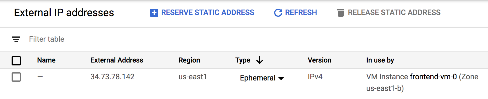

Lately I’ve been messing around with terraform; using it to set up cloud infrastructure for a practice project I’m working on. The syntax used in the configuration files it processes is easy to use but now and again, I need to check the docs. Thankfully they’re well written, nicely formatted, and contain lots of examples to follow along with.
And yet it still took me hours to implement what I thought would be a trivial config.
Spoiler: it was a user error (caused by reading comprehension mostly) but the docs may still be 0.05% responsible.
The Provider
Providers are a construct in terraform that basically act as a wrapper around an API for services like Google Cloud, Amazon Web Services, and the like. In your terraform configuration file, written in HCL, you initialize a provider and use their unique configuration spec to have terraform interact with the API and yield whatever infrastructure you desire.
The Problem
Things were going well. I had gotten terraform to create a network, some firewall rules, and some virtual machines (with internal IP addresses); all with very few actual lines of configuration.
The problem arose when I wanted to expose the VMs to the internet so that ansible could connect to and configure them further. This meant that they each needed an external IP.
No big deal, I thought. Creating a VM through the GCP cloud console automatically assigns an ephemeral IP, which is exactly what I wanted. It should be just as easy to do the same with terraform.
It is actually very easy. I just couldn’t see it at the time.
Side Note
There are two types of external IPs: static (yours until you decide to give it up) and ephemeral (yours for as long as the machine is running). GCP charges for the former but not the latter, hence why I was after an ephemeral one.
The Docs
The Google provider exposes a resource called google_compute_instance whose main terraform doc page is here. The important stanza from that doc is the network_interface one below:
resource "google_compute_instance" "default" {
...
network_interface {
network = "default"
access_config {
// Ephemeral IP
}
}
}
Reading this the first time I understood the comment in the access_config chunk to mean: this is where you need to put the config to get an ephemeral IP.
With this (incorrect thought) in mind, I took to the internet again to see what I could find. I found a few good examples on this page but they were setting up and using a static address instead.
resource "google_compute_address" "static" {
name = "ipv4-address"
}
resource "google_compute_instance" "instance_with_ip" {
...
network_interface {
network = "default"
access_config {
nat_ip = google_compute_address.static.address
}
}
}
I decided to give this a shot anyway and to no one’s surprise, it gave me a static external address. I thought that I could maybe configure the static google_compute_address to give me an ephemeral one so back to the internet I went…
Nothing I found helped.
As a last ditch effort, I copied the network_interface stanza verbatim from the example google_compute_instance page above and again, to no one’s surprise, it worked. Now I knew for sure that I had missed something so I re-read the doc for what felt like the forty-second time that day.
Lacking both energy and sanity at this point, I read that access_config stanza again and it finally clicked: this is all the configuration you need to get an ephemeral IP; NOTHING. So I left the access_config stanza empty, re-ran terraform, and marveled at my new non-static external IP.

The Moral
RTFM but also understand what is there and infer what isn’t there.
If I were writing this doc, I might be just a tad more explicit:
resource "google_compute_instance" "default" {
...
network_interface {
network = "default"
access_config {
// Leave this empty to assign an Ephemeral IP
}
}
}